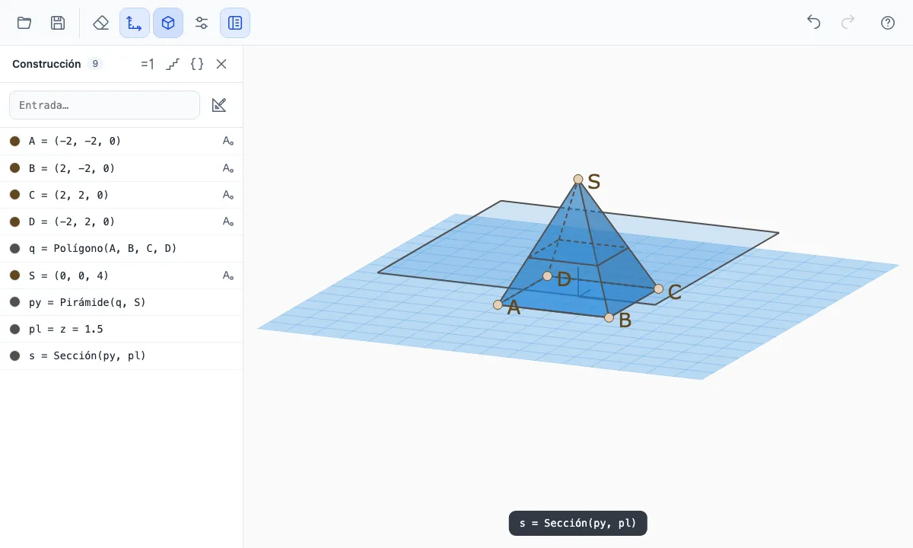

El 3D

Pasar a 3D
- Una figura nueva es plana. Vista 3D inclina la cámara: el plano de la figura se convierte en el suelo z = 0 y el sistema de coordenadas en un triedro. Una segunda pulsación vuelve al plano, con el sistema de coordenadas anterior.
-
La vuelta al plano se rechaza mientras un objeto salga del
plano z = 0; la indicación lo nombra. A la inversa,
una figura plana rechaza cualquier objeto del espacio (
A = (1, 2, 3), esfera…). - Cada cambio es un paso de deshacer.
- Las figuras 3D de DGPad, con los puntos libres en el plano de la pantalla, no tienen este botón.
Vista
- Girar: botón derecho, o un dedo en un lugar vacío. Mover: botón izquierdo en un lugar vacío. Zoom: rueda.
- Separe dos dedos para ampliar la figura y júntelos para reducirla. Deslice ambos dedos juntos para mover la vista.
- P: perspectiva o proyección paralela; S: suelo. Los mismos ajustes en la pestaña Figura.
- Las partes ocultas (aristas, circunferencias, rectas bajo el suelo o detrás de una cara) aparecen discontinuas.
Construir
-
Un clic en un lugar vacío crea un punto sobre el suelo (con
la paleta abierta, con la herramienta Punto); con el
teclado,
S = (0, 0, 4). - La paleta gana las familias Planos y Sólidos y dos circunferencias; el anillo de un punto propone la esfera.
- Las simetrías, rotaciones, homotecias y traslaciones transforman también un plano, una esfera o un poliedro (Transformar un objeto).
-
Toda herramienta que espera un plano acepta el
suelo: se crea un plano
z = 0oculto, que luego se reutiliza. -
Las fórmulas leen las tres coordenadas:
d(A, B)es la distancia en el espacio.
| Objeto | Comando |
|---|---|
| Plano |
Plano(A, B, C),
Plano(A, d),
PlanoParalelo(A, p),
PlanoOrtogonal(A, d),
p = x + y + z = 3
|
| Perpendicular a un plano | Perpendicular(A, p) |
| Esfera |
Esfera(O, A),
Esfera(O, r)
|
| Circunferencias |
Circunferencia(d, P) de eje d;
Circunferencia(O, r, d) ortogonal a
la recta d o paralela al plano d
|
| Sólidos |
Cilindro(A, B, r),
Cono(A, B, r),
Cubo(A, B, C),
Prisma(p, P),
Pirámide(p, S)
|
| Sección |
Sección(s, p): circunferencia,
cónica o polígono
|
| Desarrollo |
Desarrollo(c, f), f de 0 (plegado)
a 1 (plano)
|
| Intersecciones |
Intersección(d, p) punto,
Intersección(p, q) recta,
Intersección(s, t) circunferencia
de dos esferas,
Intersección(d, s, n) punto (n = 1
o 2) de una recta y una esfera, un cilindro o un
cono
|
| Vértices | Vértice(c, k), k a partir de 1 |
Sólidos
- Un sólido es un único objeto: dibuja caras y aristas (discontinuas por detrás) y oculta lo que hay detrás de él. Se selecciona dentro de su contorno.
-
Cubo en dos clics: dos puntos de un mismo
plano o polígono dan
Cubo(A, B, p, ±1), del lado que mira a la cámara; dos puntos de la misma altura danCubo(A, B, 1), por encima (−1: por debajo). Si no, la herramienta espera un tercer punto. El cubo queda indefinido si [AB] deja de ser paralelo al plano. - La herramienta Sección toma el sólido y el plano en cualquier orden.
- La herramienta Intersección toma una recta y una esfera, un cilindro o un cono, en cualquier orden: crea los dos puntos en que la recta atraviesa la superficie. Un clic cerca de uno de ellos solo crea ese.
-
Un deslizador como segundo argumento de
Desarrolloanima el despliegue:f = Deslizador(0, 1, 0),n = Desarrollo(c, f).